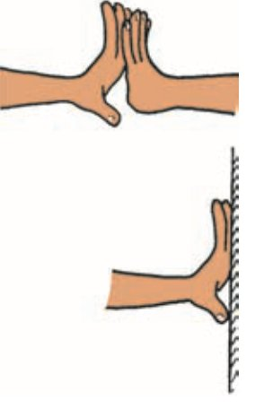
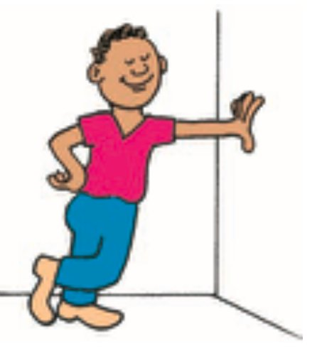
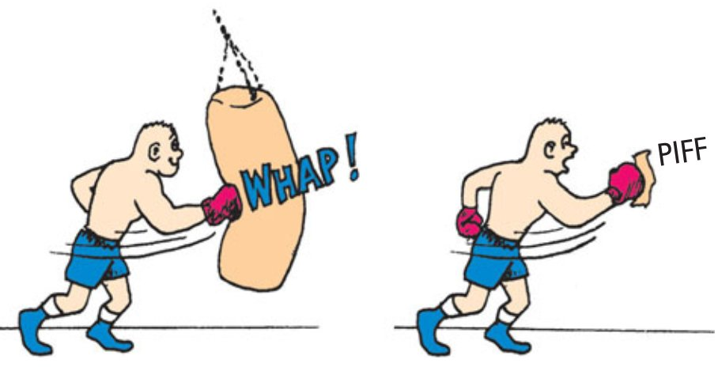
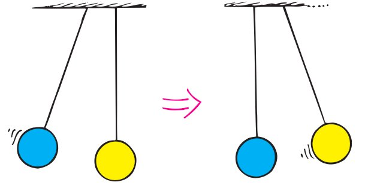

Newton’s Third Law of Motion
Chapter 5
- Forces and Interactions
- Newton’s Third Law of Motion
- Action and Reaction on Different Masses
- Vectors and the Third Law
- Summary of Newton’s Three Laws
1 Darlene Librero pulls with one finger; Paul Doherty pulls with both hands. Who exerts more force on the scale? 2 The racquet cannot hit the ball unless the ball simultaneously hits the racquet—that’s the law! 3 Husband and wife physicists Toby and Bruna Jacobson push on a pair of bathroom scales. Which scale reading is higher? 4 Is Paul touching daughter Gracie, or is Gracie touching her dad? Newton’s third law says both: You cannot touch without being touched.
For almost 20 delightful years I taught Conceptual Physics on Wednesday nights at San Francisco’s Exploratorium, greatly enriched by its founder, Frank Oppenheimer, who frequently sat in my class. When Frank died, another great physicist took his place in classroom visits, Paul Doherty, whom I was proud to have recommended that the Exploratorium hire. Paul Doherty is as personable and likely as brilliant as Frank, and like Frank could teach—really teach! It was my great pleasure to work with these two very special people!
Paul became the Exploratorium’s senior staff scientist. Whenever I was stumped on some physics, Paul was there with answers. His wonderfully deep knowledge of physics accounts for his many awards and was perhaps why he earned his Physics Ph.D. from MIT in only four years.
Paul Doherty is a physicist, teacher, author, and rock climber—excelling at all. He has written numerous articles for Exploratorium publications, mainly the Exploratorium Science Snackbook, valued by science teachers worldwide who love having the “secrets” of Exploratorium exhibits clearly revealed. The common theme of all of Paul’s books is the adventures in physics.
Paul is a consummate showman, performing physics activities at professional meetings both in this country and abroad. He demonstrated the fascination of physics with millions on the Late Show with David Letterman. The photo shows how, after striking the end of an aluminum rod to make it ring, Paul squeezes the rod between his fingers to impose a node and choose a frequency.
Paul’s rock-climbing has taken him beyond frequent Yosemite visits to Tibet and to 20,000-feet-high mountains on the Chile–Argentina border. His lower-altitude activities include doing physics in Antarctica.
How wonderful for our profession that Paul’s talent for teaching extends to his summer Exploratorium Teacher Institute, where he loves to work with physics teachers. Paul beautifully states the link he sees among scientists, teachers, and students: “Scientists look at the world and see things no one else has seen. Teachers help students see things they have never seen. Students ask questions that help teachers see things they have never seen.” Paul Doherty is a physics teacher for all seasons.
5.1 Forces and Interactions
So far we have treated force in its simplest sense—as a push or pull. Yet no push or pull ever occurs alone. Every force is part of an interaction between one thing and another. When you push on a wall with your fingers, more is happening than your push on the wall. You’re interacting with the wall, which also pushes back on you. This is evident in your bent fingers, as illustrated in Figure 5.1. There is a pair of forces involved: your push on the wall and the wall pushing back on you. These forces are equal in magnitude (have the same strength) and opposite in direction, and they constitute a single interaction. In fact, you can’t push on the wall unless the wall pushes back.1



Consider a boxer’s fist hitting a massive punching bag. The fist hits the bag (and dents it) while the bag hits back on the fist (and stops its motion). A pair of forces is involved in hitting the bag. The force pair can be quite large. But what about hitting a piece of tissue paper, as shown in Figure 5.3? The boxer’s fist can exert only as much force on the tissue paper as the tissue paper can exert on the fist. Furthermore, the fist can’t exert any force at all unless what is being hit exerts the same amount of force back. An interaction requires a pair of forces acting on two separate objects.
Other examples: You pull on a rope attached to a cart and acceleration occurs. When you pull, the cart pulls back on you, as evidenced perhaps by the tightening of the rope wrapped around your hand. A hammer hits a stake and drives it into the ground. The stake exerts an equal amount of force on the hammer, which brings the hammer to an abrupt halt. One thing interacts with another—you with the cart, or the hammer with the stake.

Which exerts the force and which receives the force? Isaac Newton’s response was that neither force has to be identified as “exerter” or “receiver”; he concluded that both objects must be treated equally. For example, when you pull on the cart, the cart pulls on you. This pair of forces, your pull on the cart and the cart’s pull on you, makes up the single interaction between you and the cart. Similarly, the pair of forces exerted on the hammer and the stake make up a single interaction. Such observations led Newton to his third law of motion.

Footnotes
1 We tend to think that only living things are capable of pushing and pulling, but inanimate things can do the same. So please don’t be troubled about the idea of the inanimate wall pushing on you. It does, just as another person leaning against you would.